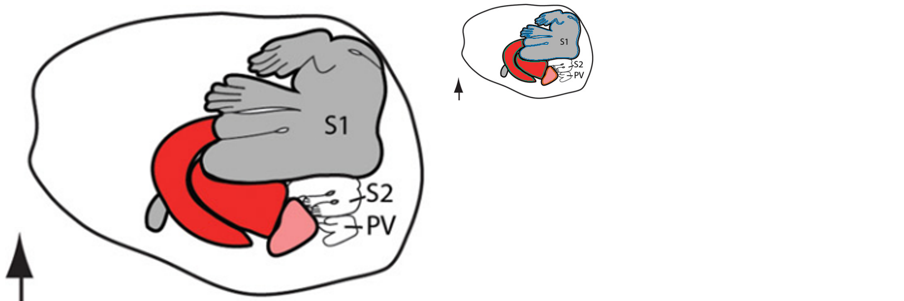

31 October 2026 · All 47 processed publication inventories reviewed, including source-only figures.
449 current views
621 source pages screened
13 revised outlines
8 added outlines
2 metadata corrections
Complete overview coverage is not complete anatomical validation. All 448 pre-existing views were screened against source images; one additional Beck et al. view now contains four outlines. Selected suspicious borders were checked enlarged. Remaining precision problems, untraced components and source limitations are listed below. Burman and Brecht remain unsuitable for accepted physical-area comparisons.
The simple closed S1/PV/S2 envelopes in Krubitzer et al. (1997), Fig4/6, and Slutsky et al. (2000), Fig2, were among the clearer examples at overview scale. Beck et al. (1996), Fig11, has clear drawn sensory outlines but uncertain projection. The revised Luethke (1989) Fig6 envelopes now bridge internal tracer marks explicitly. Clear line placement alone does not establish whole-field completeness or metric validity.
Burman’s remaining older outlines, crowded Rosa V2/MT junctions, Lyon auditory/sulcal edges, and Luethke (1988) Fig12 need further precision work. Krubitzer & Dooley’s naked mole-rat S1-other-body outline is a pictogram footprint; it is now explicitly flagged in canonical measurements.
Enlarged naked mole-rat warning

No independent anatomical envelope is visible. Geometry retained for audit; status changed to pictorial_footprint_not_anatomical_area.
Applied changes
Before versions are archived. Shared borders use the same path. Short obscured segments remain explicitly interpolated. New outlines do not represent additional animals. Comparison images below use the final saved geometry.
Retraced along the approximate centers of the published gray architectural uncertainty bands. Narrow ventral extensions retained; blue tracer patches ignored. M1/3a and 3a/3b use identical shared paths. The broad junction at the ventral tips is an explicit band-center estimate, not an observed sharp border. Dorsal component only: the upper edge follows the unfolding cut, not a complete field boundary. No physical scale established; held out of quantitative analysis.
Current status: provisional_gray_band_center_estimate · dorsal_component
Retraced along the approximate centers of the published gray architectural uncertainty bands. Narrow ventral extensions retained; blue tracer patches ignored. M1/3a and 3a/3b use identical shared paths. The broad junction at the ventral tips is an explicit band-center estimate, not an observed sharp border. Dorsal component only: the upper edge follows the unfolding cut, not a complete field boundary. No physical scale established; held out of quantitative analysis.
Current status: provisional_gray_band_center_estimate · dorsal_component
Previously omitted closed frontal field. Approximate gray-band centers traced on CJ58R Fig9A; tracer deposits and solid fold lines are not region borders. Shared borders reuse the M1/6Dc/6Dr/8Ad/8Av paths. Wide multi-field junctions remain estimates within the printed uncertainty bands. Pixel-only, provisional and excluded from quantitative analysis; no scale borrowed.
Current status: provisional_gray_band_center_estimate · complete_drawn_field
Previously omitted closed frontal field. Approximate gray-band centers traced on CJ58R Fig9A; tracer deposits and solid fold lines are not region borders. Shared borders reuse the M1/6Dc/6Dr/8Ad/8Av paths. Wide multi-field junctions remain estimates within the printed uncertainty bands. Pixel-only, provisional and excluded from quantitative analysis; no scale borrowed.
Current status: provisional_gray_band_center_estimate · complete_drawn_field
Previously omitted closed frontal field. Approximate gray-band centers traced on CJ58R Fig9A; tracer deposits and solid fold lines are not region borders. Shared borders reuse the M1/6Dc/6Dr/8Ad/8Av paths. Wide multi-field junctions remain estimates within the printed uncertainty bands. Pixel-only, provisional and excluded from quantitative analysis; no scale borrowed.
Current status: provisional_gray_band_center_estimate · complete_drawn_field
Previously omitted closed frontal field. Approximate gray-band centers traced on CJ58R Fig9A; tracer deposits and solid fold lines are not region borders. Shared borders reuse the M1/6Dc/6Dr/8Ad/8Av paths. Wide multi-field junctions remain estimates within the printed uncertainty bands. Pixel-only, provisional and excluded from quantitative analysis; no scale borrowed.
Current status: provisional_gray_band_center_estimate · complete_drawn_field
Retraced along the approximate centers of the published gray architectural uncertainty bands. Narrow ventral extensions retained; blue tracer patches ignored. M1/3a and 3a/3b use identical shared paths. The broad junction at the ventral tips is an explicit band-center estimate, not an observed sharp border. Dorsal component only: the upper edge follows the unfolding cut, not a complete field boundary. No physical scale established; held out of quantitative analysis.
Current status: provisional_gray_band_center_estimate · dorsal_component
Smooth printed A-I envelope retraced independently on this panel. L-in-circles, tracer squares/stars/dots and the injection patch are internal annotations. Fig6 panels 3 and 4 show the same tamarin 87-44 hemisphere with less superimposed label and support the hidden left arc in panels 1 and 2; no other animal supplies geometry. Short symbol gaps bridged along source tangents. Scale and repeated-view status retained.
Current status: provisional; anatomical review required · complete
R envelope follows the printed dashed outer boundary, bridging inter-dash gaps. Its A-I border is the identical corrected A-I run. Tracer patches are included tissue; Fig6 panels 3/4 confirm the same-case border under the dense marks in panels 1/2. Existing repeated-view and calibration restrictions retained.
Current status: provisional; anatomical review required · approximate
Smooth printed A-I envelope retraced independently on this panel. L-in-circles, tracer squares/stars/dots and the injection patch are internal annotations. Fig6 panels 3 and 4 show the same tamarin 87-44 hemisphere with less superimposed label and support the hidden left arc in panels 1 and 2; no other animal supplies geometry. Short symbol gaps bridged along source tangents. Scale and repeated-view status retained.
Current status: provisional; anatomical review required · complete
R envelope follows the printed dashed outer boundary, bridging inter-dash gaps. Its A-I border is the identical corrected A-I run. Tracer patches are included tissue; Fig6 panels 3/4 confirm the same-case border under the dense marks in panels 1/2. Existing repeated-view and calibration restrictions retained.
Current status: provisional; anatomical review required · approximate
Smooth printed A-I envelope retraced independently on this panel. L-in-circles, tracer squares/stars/dots and the injection patch are internal annotations. Fig6 panels 3 and 4 show the same tamarin 87-44 hemisphere with less superimposed label and support the hidden left arc in panels 1 and 2; no other animal supplies geometry. Short symbol gaps bridged along source tangents. Scale and repeated-view status retained.
Current status: provisional; anatomical review required · complete
R envelope follows the printed dashed outer boundary, bridging inter-dash gaps. Its A-I border is the identical corrected A-I run. Tracer patches are included tissue; Fig6 panels 3/4 confirm the same-case border under the dense marks in panels 1/2. Existing repeated-view and calibration restrictions retained.
Current status: provisional; anatomical review required · approximate
Smooth printed A-I envelope retraced independently on this panel. L-in-circles, tracer squares/stars/dots and the injection patch are internal annotations. Fig6 panels 3 and 4 show the same tamarin 87-44 hemisphere with less superimposed label and support the hidden left arc in panels 1 and 2; no other animal supplies geometry. Short symbol gaps bridged along source tangents. Scale and repeated-view status retained.
Current status: provisional; anatomical review required · complete
R envelope follows the printed dashed outer boundary, bridging inter-dash gaps. Its A-I border is the identical corrected A-I run. Tracer patches are included tissue; Fig6 panels 3/4 confirm the same-case border under the dense marks in panels 1/2. Existing repeated-view and calibration restrictions retained.
Current status: provisional; anatomical review required · approximate
Follow-up recheck: residual right-border bends around the injection ovals removed. The DM/V2 continuation across the clustered symbols is now smooth and marked orange; all other vertices are retained.
Current status: provisional; anatomical review required · complete
Smooth DM contour retained after enlarged review. Orange now also identifies the short upper-right gap before the V2 junction; no geometry or area change.
Current status: provisional; anatomical review required · complete
Partial contour retained; letter-shaped detours around the lower legend replaced by a smooth, explicitly inferred continuation. Upper frame closure and both legend-hidden intervals remain orange and excluded from complete-field summaries.
Current status: provisional; anatomical review required · partial
Previously omitted Fig11 cortical panel, case92-78. Printed closed field envelope traced across internal recording dots/circles/stars; numbered receptive-field marks are not holes or borders. S1/S2 and S2/PV use shared paths. Auditory and PV envelopes genuinely overlap as described in the caption and Results. Calibrated drawing area only: this panel’s intrinsic flattening/projection is not explicitly established; excluded from complete intrinsic-field summaries and not a new animal.
Current status: projection_uncertain_drawing_area_only · complete_drawn_component_projection_uncertain
Previously omitted Fig11 cortical panel, case92-78. Printed closed field envelope traced across internal recording dots/circles/stars; numbered receptive-field marks are not holes or borders. S1/S2 and S2/PV use shared paths. Auditory and PV envelopes genuinely overlap as described in the caption and Results. Calibrated drawing area only: this panel’s intrinsic flattening/projection is not explicitly established; excluded from complete intrinsic-field summaries and not a new animal.
Current status: projection_uncertain_drawing_area_only · complete_drawn_component_projection_uncertain
Previously omitted Fig11 cortical panel, case92-78. Printed closed field envelope traced across internal recording dots/circles/stars; numbered receptive-field marks are not holes or borders. S1/S2 and S2/PV use shared paths. Auditory and PV envelopes genuinely overlap as described in the caption and Results. Calibrated drawing area only: this panel’s intrinsic flattening/projection is not explicitly established; excluded from complete intrinsic-field summaries and not a new animal.
Current status: projection_uncertain_drawing_area_only · complete_drawn_component_projection_uncertain
Previously omitted Fig11 cortical panel, case92-78. Printed closed field envelope traced across internal recording dots/circles/stars; numbered receptive-field marks are not holes or borders. S1/S2 and S2/PV use shared paths. Auditory and PV envelopes genuinely overlap as described in the caption and Results. Calibrated drawing area only: this panel’s intrinsic flattening/projection is not explicitly established; excluded from complete intrinsic-field summaries and not a new animal.
Current status: projection_uncertain_drawing_area_only · complete_drawn_component_projection_uncertain
Enlarged source recheck 2026-10-31: this silhouette follows the hand/body pictogram superimposed on S1, including finger edges. The source supplies no independent anatomical perimeter here. Retained only as a published drawing footprint for audit; not a valid S1 field area. No anatomical contour was invented by smoothing the pictogram.
Current status: pictorial_footprint_not_anatomical_area · pictorial_footprint
Not just sections: drawable reconstructions exist, but metric surface interpretation must be established.
SanchezPanchuelo_etal_2018 Additional Fig3 participants and Fig6 SII
native_surface_required
Thresholded response domains need native vertices and comparable definitions.
Neafsey_etal_1986 All physical areas
local_calibration_required
Curved coordinate grid has spatially varying image scale; integrate local cells.
Brecht_Freiwald_2012 All schematic measurements
schematic_only
No independent calibration establishes metric fidelity. Keep flagged; do not borrow a locator scale.
All 47 publication reviews
Overview panels preserve the pre-edit screening state. Use each current gallery or the changes above for revised geometry. Source pages are separately linked, including figures with no saved ROI.
All eight canonical views and all main-paper source figures screened. hA1 boundaries distinct from red leaders and gray sulcal shading. Source caption p3 confirms dotted and solid functional reversals. Additional hR/hRT/belt fields need larger full-panel crops and field-by-field tracing; not yet digitized. Fig3 S4R is a repeat. Models, graphs and anatomical projections are not new flatmaps.
All eight current contours and all 14 source figures screened; all eight source/current pairs inspected enlarged in the additional recheck. Fig3 residual tracer-driven right-edge bends corrected; Figs9/11 interpolation display made explicit. Figs4/7 remain inferred estimates, Fig11 partial. Other panels predominantly thalamic/collicular sections or summaries; Fig5 repeats Fig4 case.
All original 22 views and source figures 1–18 screened. Added Fig11 case92-78 S1/S2/PV/Aud as repeated drawing-only outlines: panel projection uncertain, own 1mm bar, excluded from complete-field summaries. Animal body drawings excluded. Other open/clipped fields remain unmeasured.
Two views and figures1–4 screened. Sampling-grid footprints are partial projected motor maps, not whole M1. Medial panel Fig2D is additional partial coverage requiring separate tracing/geometry assessment.
Source-only view and figures1–8 screened. Fig7 explicitly illustrates nonuniform flattening area distortion; use native surface data/areas, not screenshot pixel area. No new metric 2D ROI accepted.
Four schematic views and figures1–3 screened. Color outlines do not establish metric fidelity. Calibration cannot be transferred from brain locator without source evidence. Remains schematic-only.
All four views and source figures1–10 including Fig9 continuation pages12–13 screened. Seven CJ58R gray-band-center revisions/additions applied; field extent and uncertainty explicit. Fig9 B–D are repeated views of the same CJ58R anatomy with different tracers; useful cross-checks, not additional animals, and Fig6 dashed M1 outlines need further enlargement. No calibration borrowed.
Three views and figures1–5 screened. Fig2 colored S1 body subdivisions distinct from internal symbols. Gray dots do not define closed S2/PV perimeter. Fig4A/B summaries are not independent animals; Fig4C myelin boundary diffuse.
Four face/oral 3b views and figures1–16 screened. Figs6–14 repeat tracer layers of four cases; Fig5 physiologic enlargements useful for interpretation. Additional 3a/1/2/S2/PV components need explicit partial-boundary assessment. Tracer deposits not field borders. Fig15 opposite hemisphere must retain identity.
Six views and figures1–8 screened. Hand footprints and area1/2 strips are sampled components. M1 tracer clouds not whole M1 perimeter. Medial CMA/SMA outlines open; potential stimulation footprints need separate extent classification.
Two views and inventoried source figure pages screened. Fig2 composite atlas field boundaries distinct from Fig1 topographic contours. 76 saved outlines retained; atlas carrier is not 76 independent measurements. Fig1 geometry-only view; hierarchies are not area maps. Figure-number completeness requires caption audit (Fig5 absent from current page inventory). Numbering-gap audit located Fig5 on PDF page31: graph, no flatmap; added to source inventory. All47 PDF pages checked as thumbnails for missing figures.
All17 views and source figures1–17 screened. Smooth motor responsive envelopes generally retained across dots and hatching. Fig4 case9212 distal-forelimb top edge is an open visible component, not wholefield. Fig2 case9211 has potentially traceable face subcomponents despite no complete S1. Figs5/6/11–14 are repeated maps; body drawings not cortex.
Six views and source figures1–16 screened. Pass2 bank-component corrections retained. Dense tracer distributions not borders; medial and parietal maps contain additional components. Fig11 is a separate threshold presentation requiring case linkage; no new animal inferred. Case9 missing own scale remains unresolved.
Source-only view and main figures1–5 screened. Inflated/flat surface projections require native mesh areas and atlas labels; screenshot area cannot supply cortical mm2. No invented calibrations.
Four views and figures1–7 screened. Existing outlines represent sampled extents, not complete M1/3a/3b. Colored physiological tiles and internal hatch lines do not alter anatomical field borders. Fig5/6 pooled overlap maps cannot add cases; additional 1/2 and PPC sampled components remain candidates.
All 11 views and source figures screened. Pink V1 perimeter must be retained separately from fitted blue ellipse; green stars locally obscure the edge. No new independent field in probability/model panels. Enlarged LH4 source inspected; no automatic ellipse substitution.
21 views and source figures1–16 screened. C, SI, SII/PV borders must stay distinct from receptive-field symbols. Whole SI often open; closed face/forepaw islands offer additional partial coverage. Fig14/15 summaries and Fig16 borrowed somatotopies are illustrative, not new animals. Fig4 lower face component clipped by frame.
Source-only view and source figures1–12 screened. CHARM hierarchy shown on projected surfaces and sections; native labels/mesh required for area. No screenshot calibration.
All six source figures screened. Schematic/projected PPC-motor network diagrams and movement domains, not native complete-field flatmaps. Colored domains and connecting arrows must not define whole M1.
18 views and figures1–7 screened. Many black primary-field silhouettes remain undigitized in summary maps; these are not biologically unmeasurable, but would be drawing-only. Histology borders diffuse, no automatic thresholding. Fig1 echidna also omitted from saved views; source map provides illustrative coverage only.
11 views and figures1–9 screened. Macaque letter-hole correction retained. Missing M1 borders in some developmental cartoons cannot be invented. Summary color polygons are illustrative; tiny brain projections/phylogeny and barrel diagrams cannot supply whole-field intrinsic areas.
14 views and figures1–9 screened. Macaque, mouse and comparative maps repeat summary sources. Naked mole-rat pictorial body/hand drawings overlay S1: their small contours should not be assumed cortical partitions. Fig7D S1_other_body needs enlarged separation of pictogram from area envelope; do not certify current contour. Other colored areas generally follow published silhouette. Enlarged check confirms S1_other_body follows the hand/body pictogram itself. Flag as pictorial footprint, unsuitable for anatomical S1 area; independent field envelope is not visible. Smoothing that into a field would invent anatomy.
All56 views and figures1–29 screened. Dense tracer rings/patches are internal. Histological Fig6C DM/DI upper/right contours require enlarged retracing; contralateral Fig25/26 dashed envelopes can support only explicit interpolations. Raw area17 construction polygons in Fig12–24 use tissue clipping; review filled masks before changing. Partial strips Fig9–11 remain partial. Additional omitted panels include Fig9A–F repeated area18 strips, not extra whole-field animals. Enlarged Fig6C confirms DM is already explicitly partial and DM/DI separator is an extrapolation. Gray-white histological source limits precision; retain qualified geometry rather than invent a hidden upper border.
20 views and figures1–21 screened. DM outlines in fig2 and fig11 are clearer than tracer-heavy Fig3/5/6. Fig12B/C histological DM/VPP remain untraced and need uncertainty-qualified source-border interpretation. Fig13 motor/3a outlined histology is a candidate omitted component. Fig19/20 are partial tissue. Do not use projected Fig21 as intrinsic area.
Six views and figures1–10 screened. Color outlines mostly clear; diagrams are illustrative, not independent animal measurements. White pictorial forelimb lines inside S1 must not become exclusion holes. Other genetic-model cartoons do not add calibrated cases.
All23 views and figures1–22 screened. Same-case local and laminar maps show field envelopes beneath injections. Large 3b island in Fig15 remains omitted because upper/left boundary obscured; dark injection shape is not boundary. Area4/3a/SMA additional components in Fig12/14/18 require edge/extent assessment. Fig21 summary contains much more drawable S1/SII coverage, but remains illustrative. Existing closed sensory envelopes generally separate symbols correctly.
23 views; all source figures1–30 screened. Whole M/SI/PV often open; closed SI islands in Fig23 E2 and Fig3 P4 offer additional partial coverage. Fig10 electrosensory islands are not whole S1. Body drawings in Figs6/7/9/13/16/17/20 are not cortex. Histology borders diffuse. Summary Fig27/28 not independent cases.
Seven views; source figures1–9 screened. Fig4/6 S1 and PV/S2 closed case outlines are among the clearer traces, repeated from Fig3/5. Fig7 medial S1 is partial; lower S1 boundary has an upper gap. Fig9 is a summary, not another animal.
All 14 saved views and all 19 source figures screened. Enlarged Fig12 shows M/S-I corner rounding and slight stroke drift; black tracer fields cannot substitute for auditory field borders. Fig1/2 whole-map panels omitted; Figs5–15 contain same case/hemisphere repeats, requiring source linkage. Summary Figs17–19 do not add independent cases.
All 19 canonical views and all 17 source figures screened. Fig6 all four panels enlarged; captions pp8–9 establish same tamarin 87-44 with separate tracer layers. Eight A-I/R revisions applied; shapes no longer follow tracer clusters or L circles; identical shared boundary paths. Native and interior-overlap checks passed. Histological/subcortical panels remain separate; summary Fig17 not an animal observation.
20 views; source figures1–15 screened. Closed A/TI/S outlines generally clear. Fig09_D auditory edge and Fig11A sulcal junction show possible inset/drift: enlarged precision review remains needed. Contralateral fields in Fig4B/11B/12B are cropped/open but partial components may be digitized. Tracer clouds are internal. Case96-43 repeats Fig9/11.
Five views; source figures1–14 screened. PPr/PPc are sampled/semiflattened extents; internal retinotopic lines are not areal borders. Fig6 PPr is closed within crop, not demonstrably whole field. Additional SIII/3b/21 components are open. Sulcal folds and summary Fig3 do not add independent cases.
Ten views; source figures1–13 screened. Thin response contours differ from thick cytoarchitectonic boundaries and curved coordinate grid. Existing body-part domains generally fit; local area calibration is required because a single global scale is inappropriate. Fig13 is idealized; Fig2 atlas is not another case.
Three views; source figures1–5 screened. Current V1, presumed MT and auditory traces are qualified histological estimates. Fig2 small S1 dashed outline is unclosed; V2 strip would be partial. Single adult female repeated in photographs; sections do not add whole-field cases.
Six views; source figures1–7 screened. Fig2 M1/S1 schematic is not an individual case. Fig5/6 case MT/Aud remain qualified. Cuts, calcarine and sulcal lines must not become field boundaries. V1/V2 incomplete geometry; source Fig1 projections not intrinsic surfaces.
Four traced views and all source figures1–12 screened. Fig7A/B field versus body-map comparison supports retained sensory-module outlines. Fig8A–C tracer reconstructions have additional untraced motor components with open M1/M2 ends; Fig9–11 colored sampled components are candidates, not whole M1 envelopes. Fig12 is a model, not an additional case.
Eight traced views; all source figures1–12 screened. Cases1–6 matched to Fig5–10 section maps. Thin areal lines differ from heavy sulcal borders. Black tracer patches are not field perimeters. Crowded V2/MT junctions need targeted precision review. FEF/frontal closed islands offer additional coverage; Fig3C/11 summaries are illustrative.
Two views; source figures1–7 screened. Current cheek response patches are unscaled drawing-only, not whole S1-face. Black central sulcus and hand ROI differ from color response edges. Additional participants in Fig3 and SII in Fig6 remain undigitized; native vertices and consistent threshold required for metric comparison. Group maps not new cases.
14 views; source figures1–14 screened. Simple Fig2 outlines clearest. Fig4/6/11 PM has dashed portions; symbols remain internal. Fig7–10/12/13 have additional closed body-part subdomains but whole SI/PM are open. Repeated cases must not be pooled as new animals; Fig14 drawing-only summary.
Two views, 67 summary ROIs; source figures1–16 screened. Fig9B leader lines cross colored fields and must not become boundaries. Fig4 demonstrates distortion: native surface data required for metric areas. Current atlas illustrations are not independent cases.
Five source-only views; source figures1–13 screened. No editable ROIs to correct. Fig13C macaque fields remain drawable but undigitized. Nonuniform distortion in Fig4 means native 3D values in Table1 cannot calibrate screenshot pixels. Drawing-only additions are possible, not calibrated flatmap areas.
One view with seven ROIs; source figures1–4 screened. Colored summary M1/SI, red body-part leader lines and black atlas partitions differ. Face arrow does not close a face ROI. Existing whole-color outlines remain illustrative.
Six views; source figures1–6 screened. Five forehead color outlines; subject D source-only. Gray folds are not response boundaries; gradient thresholds and touching fragments remain ambiguous. Other amplitude maps repeat participants. Published native ROI areas in Fig5 preferred; apparatus scale in Fig1 is not cortical calibration.
All inventoried source figures1–76 screened. Serial sections and histology guide field identity, but section area is not cortical surface area. Figures46–49 and73–76 also show surface reconstructions/summary diagrams: potentially drawable atlas regions, not yet digitized. Projection and reconstruction geometry require explicit assessment before metric use; do not treat them as intrinsic flatmaps or additional specimens.